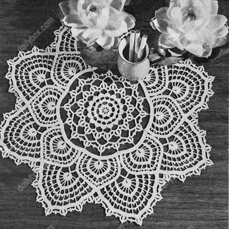

Fandango Doily Pattern
MATERIALS:
DAISY MERCERIZED CROCHET COTTON, Art. 65: 1 skein White, Size 20;
or
LILY MERCROCHET MERCERIZED CROCHET COTTON, Art. 161: 1 ball White,
Size 20.
No. 13 Steel Crochet Hook.
SIZE - 16.5 inches.
Work tightly for best results.
Starting at center, ch 9.
1st rnd: In 9th ch from hook make (tr, ch 3) 7 times. Join with sl st to next 5th ch of ch-9 (8 tr, counting starting chain as 1 tr).
2nd rnd: Ch 1, sc in same place as sl st was made, (ch 1, 5 dc in next sp, ch 1, sc in next tr) repeated around. Join final ch-1 to 1st sc. Sl st to center dc of next shell.
3rd rnd: Ch 12, (dc in center dc of next shell, ch 9) 7 times, join to 3rd ch of ch-12.
4th rnd: Ch 4, in next sp make 2 dc, ch 1, sc, ch 1, 5 dc, ch 1, sc, ch 1 and 2 dc. Dc in next dc. Repeat from around. Join to ch-4.
5th rnd: Ch 10, (dc in center dc of next shell, ch 7) 15 times. Join to 3rd ch of ch-10.
6th rnd: Ch 1, in each sp around make sc, ch 1, 1 dc, 7 tr, 1 dc, ch 1 and sc. Join. Sl st to center tr on next shell.
7th rnd: Ch 14, (dc in next shell, ch 11) 15 times. Join to 3rd ch of ch-14.
8th rnd: Ch 1, 9 sc in 2/3'ds of next sp, ch 8, turn, sk 2 sc, holding back the last lp of each tr on hook make 3 tr in next sc, Y O and draw thru all 4 lps on hook (Cluster made). Ch 8, sk 1 sc, sl st in next sc. Ch 1, turn, 10 sc in ch-8 lp, sc in Cluster, ch 4, sl st in last sc for a p, 10 sc in next ch-8 lp, 4 sc in bal. of sp on center,* 9 sc in next sp, ch 8, turn, sk 2 sc, 3 tr-Cluster in next sc, ch 8, sk 1 sc, sl st in next sc. Ch 1, turn, 3 sc in ch-8 lp, ch 2, sl st back in 3rd sc up side of previous pattern, ch 2, sl st back in last sc (joining-p made), 7 sc in bal. of lp, sc in Cluster, p, 10 sc in next ch-8 lp, 4 sc in bal. of sp on center. Repeat from * around. Sl st to 3rd sc on 1st pattern and make joining-p between 1st and last pat- terns. Sl st up to next p, ch 1, sc in same place.
9th rnd: (Ch 17, sc in next p) repeated around, join to 1st sc.
10th rnd: Ch 1, 13 sc in 2/3'ds of next sp, ch 8, turn, sk 2 sc, 3 tr-Cluster in next sc, ch 8, sk 1 sc, sl st in next sc. Ch 1, turn, 10 sc in ch-8 lp, sc in Cluster, p, 10 sc in next lp, 8 sc in bal. of ch-17 sp. 13 sc in next sp, **ch 8, turn, sk 2 sc, 3 tr-Cluster in next sc, ch 8, sk 1 sc, sl st in next sc. Ch 1, turn, 3 sc in ch-8 lp, ch 9, sl st in 5th ch from hook for a p, ch 4, sl st across in 3rd sc up side of previous pattern. Ch 4, (sl st, ch 5, sl st) back in base of p, ch 4, sl st back in last sc (joining-pattern made), 7 sc in bal. of ch-8 lp, sc in Cluster, p, 10 sc in next lp, ** 8 sc in bal. of ch-17 sp. Repeat from * around. Sl st to 3rd sc on 1st pattern and make joining-pattern between 1st and last patterns. Sl st up to next p.
11th rnd: Ch 24, (dc in next p, ch 21) 15 times, join to 3rd ch of ch-24.
12th rnd: Ch 3, (22 dc in next sp, dc in next dc) repeated around. Join to ch-3, ch 1, sc in same place.
13th rnd: * Sc in next 23 dc, ch 14, turn, sl st in 14th ch from hook to form a ring, ch 1, turn, in ring make 1 sc, 1 hdc, 1 dc, 19 tr, 1 dc, 1 hdc and 1 sc. Sl st at base of ring, sc in same dc on center, sc in next 8 dc. Ch 4, turn, sk 1st 2 sts on ring, dtr in next st, (ch 4, sk 1 st, dtr in next st) 4 times, ch 4, sk 1 st, (dtr, ch 5, dtr) in next st, (ch 4, sk 1 st, dtr in next st) 5 times, ch 4, sk 8 sc on center, sl st in next sc. Ch 1, turn, 2 sc and 2 hdc in 1st sp, (dc in next dtr, 4 dc in next sp) 5 times, dc in next dtr, 2 dc in next sp, 3 dc in 3rd (center) st of same sp, 2 dc in bal. of sp, (dc in next dtr, 4 dc in next sp) 5 times, dc in next dtr, 2 hdc and 2 sc in next sp, sc in next 6 dc. Ch 6, turn, sk 1st 4 sts on scallop, tr in next dc, (ch 6, sk 4 dc, tr in next dc) 5 times, ch 6, sk 3 dc, (tr, ch 5, tr) in next dc, ch 6, sk 3 dc, tr in next dc, (ch 6, sk 4 dc, tr in next dc) 5 times, ch 6, sk 5 sc on center, sl st in next sc. Ch 1, turn, (in each sp make 3 sc, ch 4, sl st in last sc for a p, and 3 sc. Sc in each tr) repeated around scallop, sc in next 4 dc on center. Ch 7, turn, dc between 1st 2 ps, (ch 7, dc between next 2 ps) 13 times, ch 7, sk 3 sc on center, sl st in next 4 sc. Ch 1, turn, (7 dc in next sp, dc in dc **) 7 times, 3 dc in next sp, 3 dc in center st of same sp, 3 dc in bal. of sp, (dc in next dc, 7 dc in next sp) 6 times, dc in next dc, 6 dc in final sp, dc in side of last sc on center, sk 3 dc, sc in next 2 dc. Repeat from to **. *** Sl st across in corresponding dc on previous scallop, 7 dc in next sp, dc in dc, ch 3, sl st across in corresponding dc on previous scallop, ch 3, sl st back in last dc, 7 dc in next sp, dc in dc, ch 12, turn, sk 7 dc on previous scallop, sl st in next dc, ch 1, turn, 7 sc in half of lp, ch 14, turn, sl st in 14th ch from hook, ch 1, turn, (1 sc, 1 hdc, 1 dc, 19 tr, 1 dc, 1 hdc and 1 sc) in ring, sl st at base of ring, 7 sc on bal. of sp, sl st in last dc, 7 dc in next sp, dc in dc. Ch 4, turn, dtr in 5th st on ring, (ch 4, sk 1 tr, dtr in next tr) 3 times, ch 4, sk 1 tr, (dtr, ch 5, dtr) in next tr, (ch 4, sk 1 tr, dtr in next tr) 4 times, ch 4, sk 7 dc on previous scallop, sl st in next dc. Ch 1, turn, (2 sc and 2 hdc) in 1st sp, dc in dtr, (4 dc in next sp, dc in dtr) 4 times, 2 dc in next sp, 3 dc in center st of same sp, 2 dc in bal. of sp, dc in dtr, (4 dc in next sp, dc in dtr) 4 times, (2 hdc and 2 sc) in next sp, sl st in last dc, 7 dc in next sp, dc in dc. Ch 6, turn, sk 1st 4 sts on scallop, tr in next dc, (ch 6, sk 4 dc, tr in next dc) 4 times, ch 6, sk 3 dc, (tr, ch 5, tr) in next dc, ch 6, sk 3 dc, tr in next dc, (ch 6, sk 4 dc, tr in next dc) 4 times, ch 6, sk 7 dc on previous scallop, sl st in next dc. Ch 1, turn, (3 sc, p, 3 sc) in each sp and sc in each tr around. 7 dc in next sp, dc in dc, ch 7, turn, tr between 1st 2 ps, (ch 7, tr between next 2 ps) 11 times, ch 7, sk 7 dc on previous scallop, sl st in next dc. Ch 1, turn, (4 sc, p, 3 sc) in each sp and sc in each tr around. Sl st in last dc, 7 dc in next sp, dc in tr, ch 8, turn, tr between 1st 2 ps, (ch 8, tr between next 2 ps) 11 times, ch 8, sk 7 dc on previous scallop, sl st in next dc. Cut 3" long and pull thru lp tightly. Turn, attach to last dc at other end of this last row, 3 dc in next sp, 3 dc in center st of same sp, 3 dc in bal. of sp, dc in dc, (7 dc in next sp, dc in dc) 6 times, 6 dc in next sp, dc in side of last sc, sk 3 dc, sc in next 2 dc. (Repeat from * to **, then repeat from ***) repeated around. Sl st up side of 1st small scallop to proper places, joining it to last small scallop, then make 8th large scallop.
EDGE: Attach to center dc at tip of one small scallop, sl st in next dc, * working over thread end left from next large scallop, (8 dc in next sp, dc in tr) 6 times, 11 dc in next sp, (dc in tr, 8 dc in next sp) 6 times, sl st in 3 center dc at tip of small scallop. Repeat from * around.
2nd rnd: Sc in 1st 11 dc on next large scallop, ch 8, turn, sk 2 sc, 3 tr-Cluster in next sc, ch 8, sk 1 sc, sl st in next sc. Ch 1, turn, 10 sc in ch-8 lp, sc in Cluster, p, 10 sc in next lp, * (sc in next 18 dc, repeat from ** to ** in Rnd 10) twice. Sc in next 12 dc, 3 sc in next (center) dc, sc in next dc, repeat from ** to ** in Rnd 10. Sc in next 16 dc, repeat from ** to ** again. (Sc in next 18 dc, repeat from ** to **) twice. Sc in next 6 dc, sc in tip of small scallop, sc in 1st 11 dc on next large scallop, ch 8, turn, sk 2 sc, 3 tr-Cluster in next sc, ch 8, sk 1 sc, sl st in next sc, ch 1, turn, 5 sc in half of ch-8 lp, ch 2, sl st across in 5th sc up side of previous pattern, ch 2, sl st back in last sc, 5 sc in bal. of ch-8 lp; sc in Cluster, p, 10 sc in next lp. Repeat from around. Join 1st and last patterns. Fasten off.
Stretch and pin doily right-side-down in a true circle. Steam and press dry thru a doubled cloth.
HOME